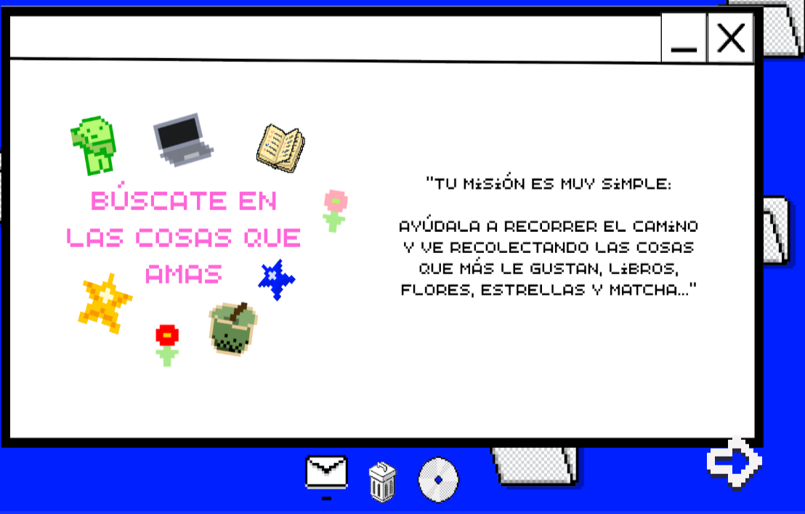
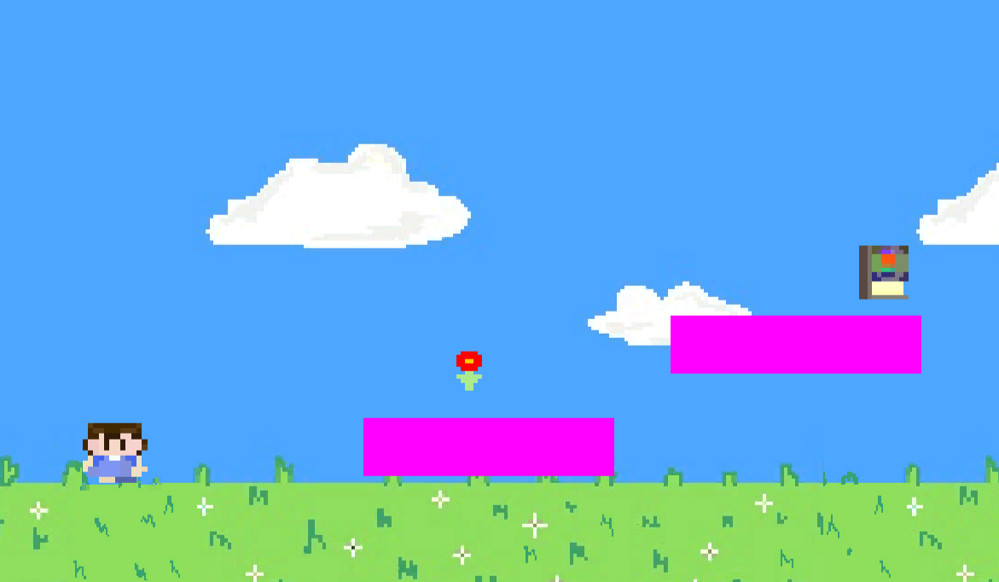

Hice un videojuego para celebrar que cumplí 25 años<3
Este proyecto forma parte de mi serie "1 proyecto creativo al mes".
Es un videojuego de aventura suuuper cortito en pixel art donde aparece un personaje que va recolectando sus cosas favoritas.
Ver proyecto ★

Desde que salí de la universidad tenía ganas de crear un videojuego, llevaba con la misma idea rondando por mi mente y afortunadamente, este año decidí crear mucho.
Este videojuego lo hice el mes de Mayo, el mes de mi cumpleaños, para celebrar mis 25 años y creo que no pudo haber quedado mejor.
Una vez leí la frase "búscate en las cosas que amas" y de eso se trata mi videojuego.
Dentro podremos encontrar un jardín y un personaje en pixel art(intenté hacerlo muy parecido a mi) que camina por todo el jardín intentando recolectar: libros, matcha,flores,estrellas,smiskis... muchas de mis cosas favoritas <3
Quise hacer todos mis assets entonces estuve dibujándolos usando diferentes herramientas de Pixel Art.
Usar Unity para mi fue la opción más obvia porque ya lo había usado brevemente antes y con ayuda de Dino, me ayudó muchísimo a poder construir todo en tan poco tiempo.